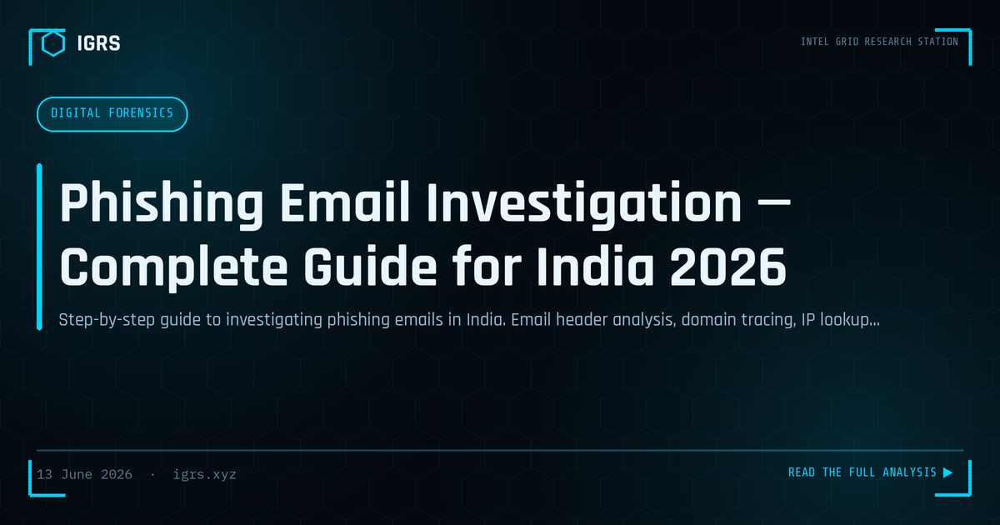

Phishing Email Investigation — Complete Guide for India 2026
Phishing: The Entry Point for Most Attacks
Over ninety percent of cyberattacks begin with a phishing email. From tax refund scams to CEO fraud to credential harvesting, phishing is the universal entry vector — and phishing email investigation is therefore a foundational skill for any cybercrime investigator in India. This guide walks through the complete methodology, from header analysis to infrastructure investigation and reporting.
Step 1: Email Header Analysis
Email headers contain the complete path a message travelled and are the starting point of any phishing investigation. Access them via "Show original" in Gmail or "Properties" in Outlook. The key fields are:
| Header Field | What It Reveals |
|---|---|
| Return-Path | Where bounces go — often the real sender domain |
| Received chain | Server path, read bottom to top |
| X-Originating-IP | Sender's IP address |
| Authentication-Results | SPF, DKIM, DMARC pass/fail |
| Reply-To | Often differs from From in phishing |
Step 2: IP Address Investigation
The originating IP extracted from headers is investigated across multiple sources:
- VirusTotal — malicious activity history
- AbuseIPDB — community-reported abuse
- Shodan — open ports and server type
- IPInfo — geolocation, ASN, ISP
- Web-Check (check.igrs.xyz) — quick consolidated lookup
Step 3: Domain Investigation
The sending or linked domain is investigated for registration and infrastructure clues:
| Tool | Insight |
|---|---|
| WHOIS | Registration date, registrar, name servers |
| crt.sh | SSL certificates, related subdomains |
| URLScan | Screenshot, resources, redirects |
| PhishTank | Known phishing status |
| VirusTotal | Malware and phishing history |
A recently registered domain is a strong phishing indicator — legitimate businesses rarely send mail from domains registered days earlier.
Step 4: Analysing the Phishing Page
If the email links to a credential-harvesting page, careful analysis (in an isolated environment) reveals the kit used, where harvested credentials are sent, and infrastructure shared with other campaigns. URLScan provides a safe way to view the page and its resources without direct interaction. The form submission destination often exposes the attacker's collection server.
Step 5: Infrastructure Pivoting
Phishing rarely involves a single domain. By pivoting on shared IPs, common registrants, matching SSL certificates, and identical phishing kits, investigators uncover entire campaigns. Passive DNS and crt.sh reveal related domains, transforming a single phishing email into a map of the attacker's broader operation.
Reporting Phishing in India
| Channel | Purpose |
|---|---|
| incident@cert-in.org.in | Mandatory for critical infrastructure |
| PhishTank | Public phishing database |
| Google Safe Browsing | Browser-level blocking |
| cybercrime.gov.in | For financial fraud phishing |
Understanding SPF, DKIM, and DMARC
These email authentication mechanisms are central to phishing investigation. SPF verifies the sending server is authorised for the domain, DKIM confirms the message was not tampered with, and DMARC enforces policy and provides reporting. Failures in these — visible in the Authentication-Results header — indicate spoofing or unauthorised sending, the hallmark of phishing.
Legal Sections for Phishing
| Section | Act | Offence |
|---|---|---|
| Section 66 | IT Act 2000 | Computer-related offences |
| Section 66D | IT Act 2000 | Personation using computer |
| Section 318 | BNS 2023 | Cheating |
| Section 74 | IT Act 2000 | Publication for fraudulent purpose |
Evidence Preservation
Phishing evidence must be preserved properly: save the complete email with full headers (not just the body), capture the phishing page via URLScan and screenshots, document all IPs and domains, and compute hash values. A Section 63 BSA 2023 certificate is required for court admissibility of these electronic records.
Building Phishing Investigation Skills
Effective phishing investigation combines header analysis, IP and domain intelligence, infrastructure pivoting, and proper reporting and evidence handling. For Indian investigators, the workflow applies equally to a single suspicious email and a large-scale campaign. As phishing remains the dominant attack vector, this methodology is among the most frequently applied and highest-impact skills in the cybercrime investigator's toolkit.